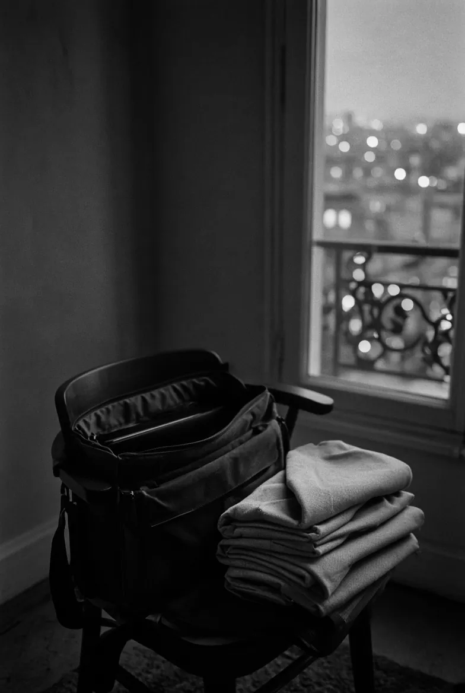
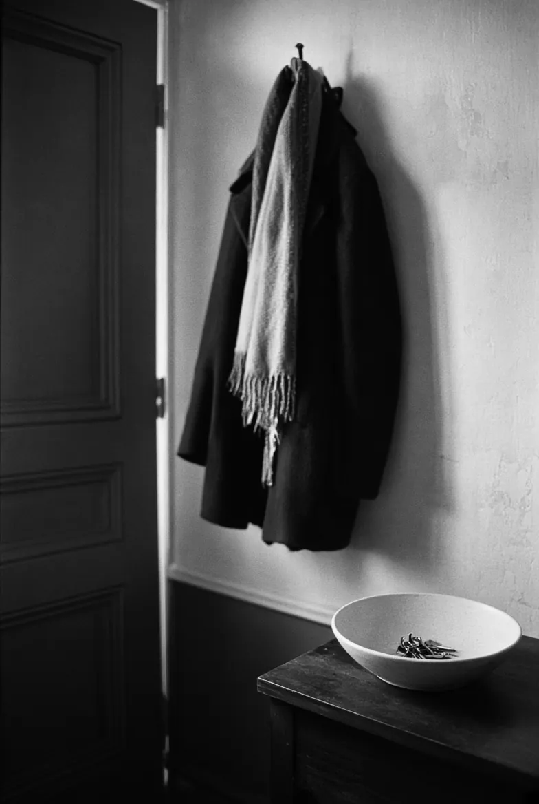
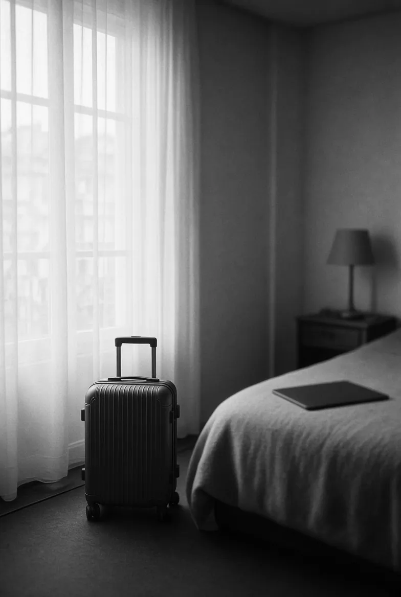
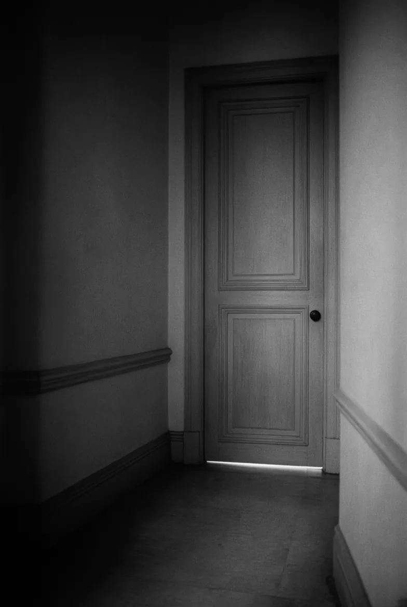
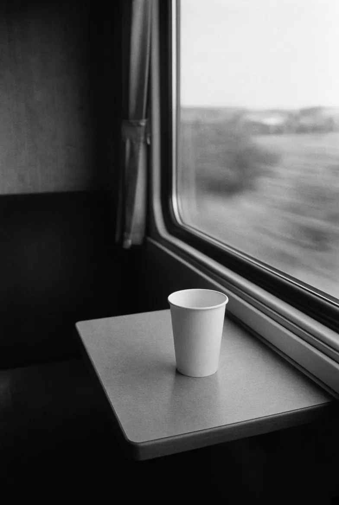
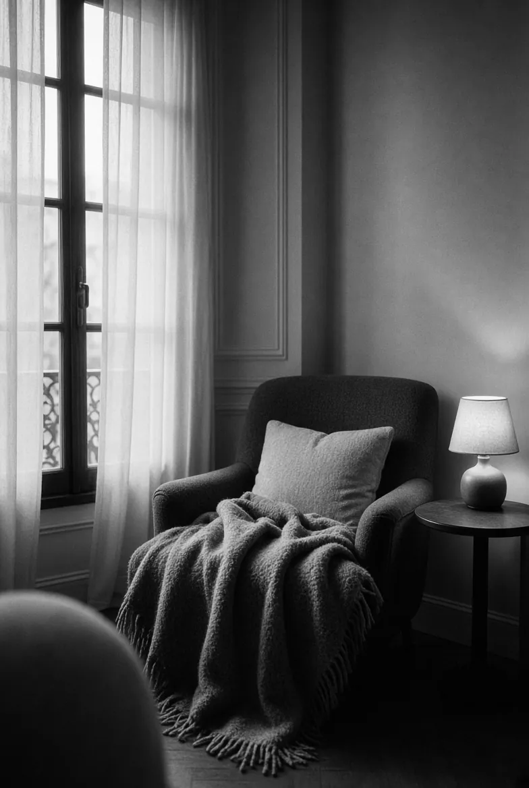

Rythme professionnel soutenu
Mettre en place un suivi sans ajouter des temps de trajet à un agenda déjà contraint.
Téléconsultation
Rodolphe Oppenheimer, psychothérapeute et psychanalyste, accompagne les adolescents et les adultes exclusivement en visioconférence. Sa pratique associe les thérapies cognitives et comportementales et la psychanalyse, notamment autour de l’anxiété et des phobies.
65 €consultation individuelle en vidéo

Aucune consultation en cabinet physique.
Horaire et confidentialité préservés.
Réservation en ligne ou appel direct.
Le premier échange vérifie si ce format convient.
I Le cadre
1La séance reste un rendez-vous de soin, pas un simple échange pratique par écran interposé.
La psychothérapie en visioconférence permet de commencer ou de poursuivre un travail thérapeutique à distance. Rodolphe Oppenheimer reçoit exclusivement en vidéo : aucune consultation n’a lieu en cabinet physique.
Le support change, mais l’essentiel ne change pas : un temps réservé, un lieu calme, une parole libre, une écoute clinique et un cadre confidentiel.
Vous pouvez consulter depuis votre domicile ou un autre lieu calme, à condition de pouvoir parler librement et sans interruption. Une connexion internet stable et un appareil équipé d’une caméra et d’un microphone sont nécessaires.
Le premier rendez-vous sert à clarifier la demande, à vérifier que la téléconsultation est adaptée à votre situation et à définir la suite possible du travail.

Pl. I Depuis chez vous
II Pourquoi ce format
La téléconsultation peut aider lorsque les contraintes logistiques deviennent un frein : temps de transport, fatigue, mobilité réduite, emploi du temps instable, déplacements fréquents ou résidence hors de Paris.

Consulter depuis un lieu choisi, sans ajouter un trajet ou une attente à une période déjà difficile.

Préserver le suivi malgré les déplacements, l’éloignement ou les changements d’organisation.
Installer un rythme de séance plus facile à maintenir dans la durée.

Travailler dans un espace calme, sans interruption, avec les mêmes exigences de discrétion.
III Préparer sa séance
2Rien n’est envoyé ni enregistré par cette liste ou ce test : tout reste sur votre appareil.
Une pièce où personne ne va entrer, et une ligne correcte. Évitez la voiture et le bureau partagé, on n’y parle jamais vraiment.
Le navigateur vous demandera l’autorisation.
IV Cadre clinique
La téléconsultation ne vise pas à proposer une réponse rapide ou une solution immédiate. Elle offre un espace de réflexion et d’exploration, lorsque les conditions de travail sont réunies.
La première séance permet de comprendre ce qui vous amène : anxiété, phobie, stress, difficulté relationnelle, fatigue morale, état dépressif ou besoin de mettre en mots une situation actuelle.
Le rythme, le canal utilisé et les conditions de confidentialité sont précisés pour que le travail puisse se dérouler sérieusement.
Si la psychothérapie en visioconférence convient, le suivi peut se poursuivre à distance. Si un autre cadre paraît plus adapté, cela doit être nommé clairement.
V Cadre éthique
Les échanges sont protégés par le secret professionnel. Aucun enregistrement n’est effectué et la relation thérapeutique repose sur un cadre de confiance.
Les objectifs et les outils du suivi sont choisis en fonction de votre situation, de votre histoire et de votre demande, puis réévalués au fil du travail.
Le travail thérapeutique s’inscrit dans un cadre de neutralité, de bienveillance et d’absence de jugement, avec une attention constante à l’ajustement clinique.
VI Pour qui ?
Rodolphe Oppenheimer accompagne les adolescents et les adultes confrontés notamment à l’anxiété, aux phobies, au stress ou à des difficultés relationnelles.

Mettre en place un suivi sans ajouter des temps de trajet à un agenda déjà contraint.
Vous n’avez pas à vous déplacer à Paris. Le rendez-vous se déroule en vidéo, depuis un lieu calme où vous pouvez parler librement.

Maintenir une continuité de travail malgré une organisation professionnelle ou personnelle instable.

Un premier échange peut aider à préciser la demande lorsque l’anxiété ou les évitements compliquent les déplacements.
Poursuivre un accompagnement existant à distance, lorsque ce format reste cliniquement adapté.
Vous pouvez prendre rendez-vous depuis votre lieu de vie, si vous disposez d’un espace calme et d’une connexion stable.
VII Limites
Elle peut soutenir un travail thérapeutique régulier, mais elle ne remplace pas les dispositifs d’urgence, ni les prises en charge qui nécessitent un cadre médical ou institutionnel spécifique. La prise de rendez-vous en ligne n’est pas conçue pour les urgences.
VIII Questions fréquentes
En ligne sur Doctolib, où les créneaux disponibles s’affichent en temps réel, ou au 07 52 07 07 07. Si vous préférez écrire avant d’appeler, passez par le .
Oui. Le premier rendez-vous se prend comme les suivants, sur Doctolib ou par téléphone. Il faut compter en général une semaine environ.
65 € la consultation individuelle en vidéo. Le tarif est le même pour la première séance et pour les suivantes.
Pas par l’Assurance Maladie. Les séances chez un psychothérapeute qui n’est pas médecin n’ouvrent pas droit à remboursement, et le dispositif « Mon soutien psy » ne concerne que les psychologues conventionnés.
Beaucoup de mutuelles prévoient en revanche un forfait annuel pour des séances de psychothérapie. Le nombre de séances et le plafond changent d’un contrat à l’autre, ça vaut le coup de vérifier le vôtre avant de commencer.
Rodolphe Oppenheimer ne distingue pas la première consultation des séances suivantes : une séance reste une séance. Chaque rencontre permet de comprendre la demande, de préciser les objectifs et d’identifier les éventuelles difficultés susceptibles de freiner le travail thérapeutique.
Non. Beaucoup de gens appellent sans savoir quel mot mettre sur ce qu’ils vivent, une fatigue qui dure ou quelque chose qui ne bouge plus depuis des mois. C’est au premier rendez-vous qu’on essaie de le formuler.
Oui, les obligations du praticien ne dépendent pas du canal. Le secret professionnel est respecté et aucun enregistrement n’est effectué. De votre côté, ça tient surtout au lieu depuis lequel vous appelez, et au fait de ne pas enregistrer la séance.
Même régularité, mêmes obligations de confidentialité. La différence tient au décor : vous devez fabriquer vous-même le calme que la salle d’attente installait toute seule. Le format ne convient pas à tout le monde, et le premier échange sert aussi à le vérifier.
Ni l’un ni l’autre. Il est psychothérapeute et psychanalyste. Un psychiatre est médecin, il peut prescrire. Un psychologue a suivi un cursus universitaire de psychologie. Le titre de psychothérapeute, lui, est réglementé mais ne suppose pas d’être médecin.
Si un traitement ou un avis médical paraît utile, il vous renverra vers votre médecin traitant ou vers un psychiatre.
Oui. Rodolphe Oppenheimer accompagne les adolescents et les adultes. Le premier échange permet de préciser la demande et les conditions d’un suivi adapté à la situation de l’adolescent. Le suivi peut continuer pendant des études dans une autre ville ou un séjour à l’étranger.

Prendre rendez-vous
Vous n’avez rien à préparer. Le premier échange sert à faire connaissance et à voir si ce cadre vous convient.